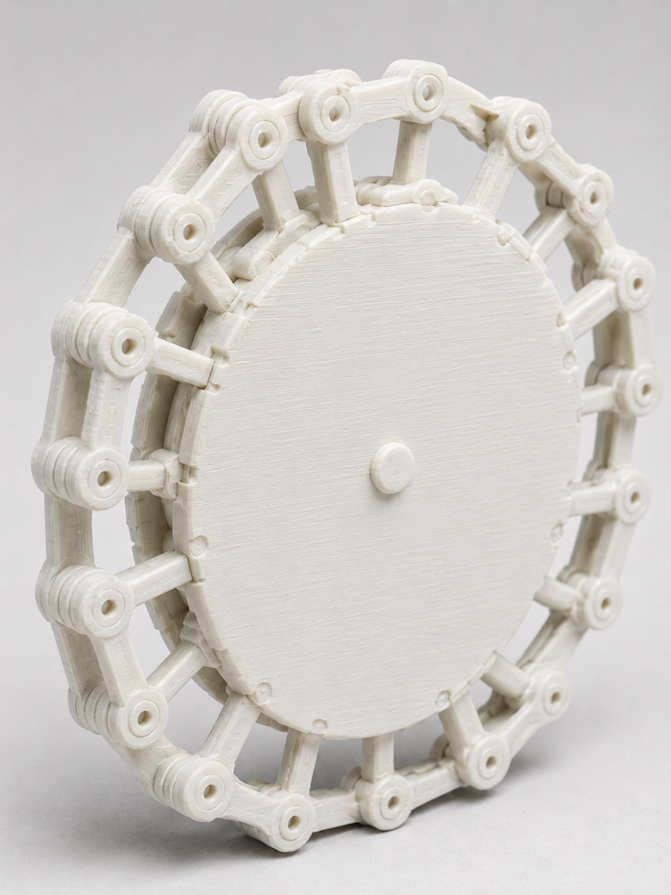
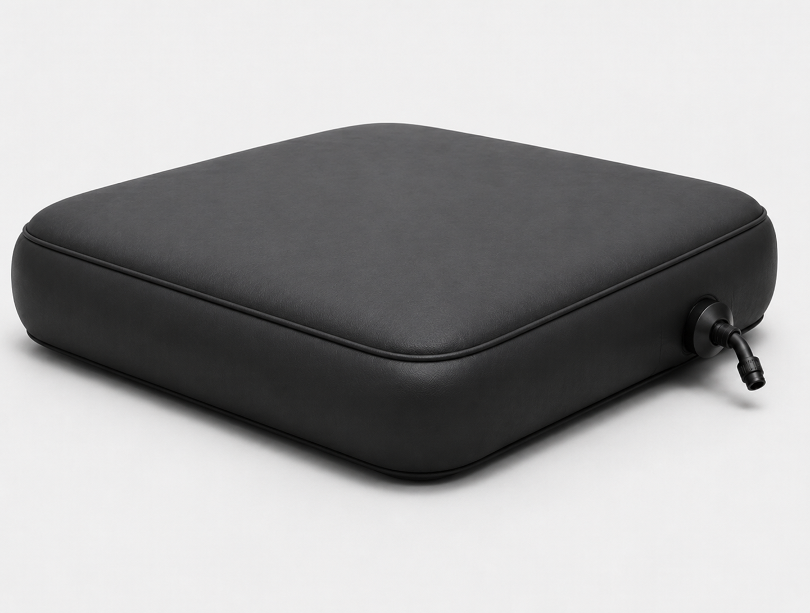

Master's thesis on domestic mobility barriers for people with lower-limb disabilities in Indian homes. Used participatory and co-speculative design to surface frictions that direct questioning misses. Four phases. 31 participants. Led to two 3D-printed interaction probes tested inside a Unity-based VR home environment.
ROLE
M.Des Thesis · Design Research · Participatory HCI · Prototyping
Can assistive technology be designed from inside the home?
That's the central question this thesis explores. Most assistive mobility devices are designed, tested, and prescribed outside the home. A wheelchair tested in a hospital corridor fails at a bathroom threshold. The literature on abandonment is clear: devices are rejected not because they're broken, but because they don't fit the person, the task, or the space.
CONTEXT
Focus: Indian homes
Lower-limb disabilities. Accessibility negotiated through jugaad, care, adaptation, and compromise.
CHALLENGE
The harder problem
In interviews, people don't describe daily friction as a problem. They describe it as something they've adapted to. A barrier you've already built a routine around stops sounding like a barrier.
SHIFT
Research question
How can participatory methods help people surface barriers they've already adapted around?
BESPOKE BOOKLET - PHASE II
FIELDWORK / DOMESTIC FRICTIONS
What emerged from participation
01
Threshold crossing
Small floor-level changes (a bathroom step, a raised doorsill) were where independence broke down. The front-wheel concept responds directly to this.
02
Height and reach
Kitchen access is useless if you can't reach the platform. Participants connected wheelchair height to bed transfers, cooking, and footrest position.
03
Affordability matters
Preference was consistent: attachable add-ons to an existing chair, not expensive replacements. Cost and modularity drove all feedback.
Five design directions translated from participant feedback, domestic frictions,
and workshop themes.
01

02

030405
The thesis does not claim to deliver a finished wheelchair. It shows how design
conversations about disability can move earlier, before the prototype stage,
without losing the user along the way.
DESIGN IMPLICATIONS
Key learnings
Domestic accessibility is interactional
Shaped by body + device + space + surface + caregiver + routine.
Abandonment starts early
Often before the device reaches the user, when design decisions are made without situated participation.
Participation redirects research
It reveals hidden constraints and surfaces design criteria that would otherwise stay invisible.
Speculative artifacts help people speak
Booklets, animations, prototypes make it easier to critique future possibilities than describe past difficulties.
CONCLUSION / OUTPUTS
Where it points
Deeper co-design, mechanical testing, home-based evaluation, and collaboration across policy making, disability studies, rehabilitation, product design, and assistive technology engineering.
On the concepts
The concepts functioned as artifacts, not final solutions. Participants connected them to lived domestic problems, confirming the research direction is grounded. But mechanical, ergonomic, and in-home testing remain necessary before these directions can be treated as resolved. The gap between conceptual relevance and functional readiness is the most honest finding this stage could produce.
Further reading
Full thesis document
- complete M.Des thesis with full methodology, findings, design implications, and references
Critique paper
- position paper on assistive technology abandonment and early user participation


.png)
.png)
.png)